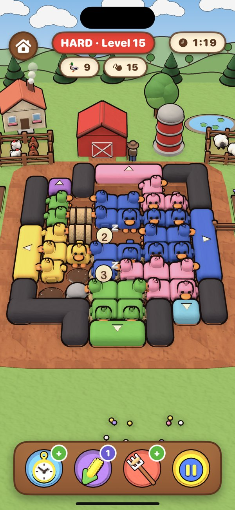
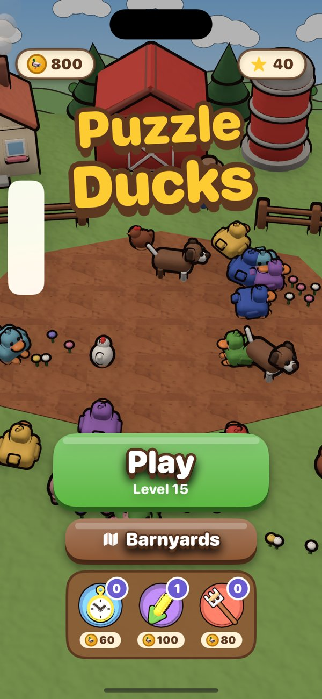

A cozy clay puzzle
Slide squarish clay ducks across a crowded farm pen and out through the gate of their colour. Every barnyard is a little lock puzzle: shuffle one flock aside so another can waddle through, and get every flock home in as few swipes as you can.
- Hand-made clay look — chunky 3D ducks, barns, silos and hay with thick cartoon outlines.
- 160 levels across 8 Barnyards — each checked by a solver, so every one can be solved, plus a new Daily Puzzle every day.
- Farmyard obstacles — rocks, mud, sheep, pigs, sleepy ducks, long cows, kicking donkeys, glaring bulls, hay carts and wheelbarrows.
- Farm tools — get a smart next move from the pocket watch, lure a flock home with a bag of corn, clear the way with a pitchfork.
- Feel-good details — ducks that waddle, blink and quack, a bouncy farmyard tune, and satisfying haptics.
- No ads, ever — no lives, no energy timers, no waiting. Works offline.